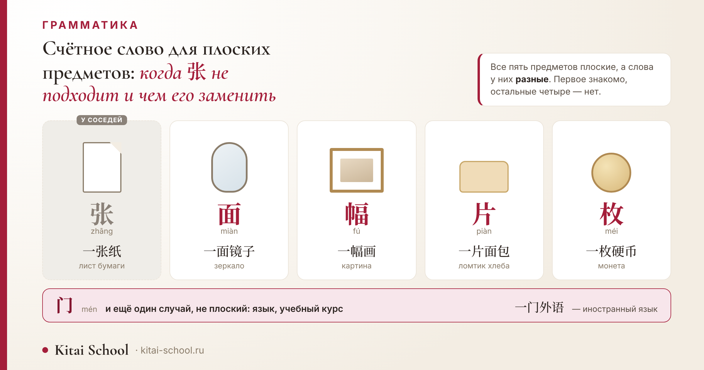
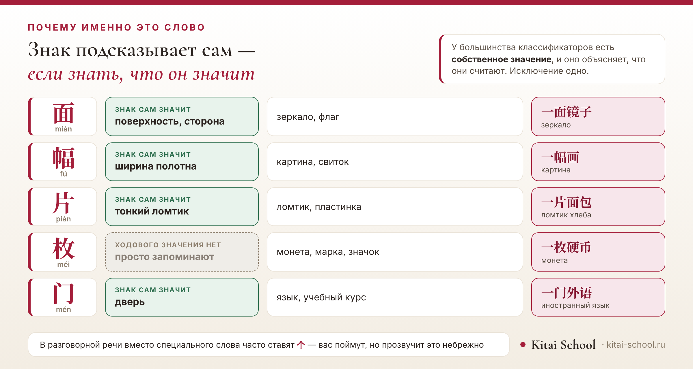

Письменность и грамматика
Счётное слово для плоских предметов: когда 张 не подходит и чем его заменить


Правило «плоское считают через 张» выучивается быстро и работает в большинстве случаев. Потом попадается зеркало, картина или ломтик хлеба — и оказывается, что у каждого из них своё слово. Разберём пять таких случаев и покажем, почему выбор в них не случаен: подсказка спрятана в самом знаке.
张 покрывает не всё плоское. Зеркало и флаг считают через 面, картину и свиток — через 幅, ломтик — через 片, монету и марку — через 枚. Отдельно стоит 门: им считают иностранные языки и учебные курсы. У четырёх из пяти есть собственное словарное значение, и оно объясняет выбор.
Короткий ответ: 张 покрывает не всё
Начну с того, что в правиле верно.
张 действительно основной классификатор для плоского: 一张纸 «лист бумаги», 一张票 «билет», 一张桌子 «стол», 一张床 «кровать». Сам этот классификатор и ещё четырнадцать частых разобраны у нас отдельно: счётные слова в китайском языке.
Но «плоское» — слишком широкий признак, чтобы покрыть им всё. Зеркало плоское, картина плоская, монета плоская — а слова у них разные.
Хорошая новость в том, что замен немного, и каждая закреплена за понятной группой предметов. Разберём их по порядку, начиная с самой частой.
面: зеркало, флаг и всё гладкое
Первая замена, и подсказка к ней лежит на поверхности — в буквальном смысле.
面 (miàn) как обычное слово означает «поверхность, сторона». Отсюда и область применения: предметы, у которых есть ровная гладкая плоскость.
- 一面镜子 — одно зеркало.
- 一面旗 — один флаг.
Разница с 张 тонкая, но уловимая. 张 — про лист, который можно взять и переложить: бумага, билет, фотография. 面 — про поверхность как таковую, которая что-то отражает или на чём-то натянута.
幅: картины и то, что висит на стене
Вторая замена, и у неё тоже говорящее значение.
幅 (fú) само по себе значит «ширина полотна». Поэтому им считают всё, что представляет собой натянутое или развешенное полотно: 一幅画 «одна картина», 一幅字 «один свиток с каллиграфией».
Сюда же относят фотографии, когда речь о работе в раме на стене, а не о снимке в телефоне или в пачке.
Вот где проходит граница. Один и тот же предмет может пойти и с 张, и с 幅 — смотря чем он выступает: листом в стопке или произведением на стене.
Пять замен: сводка
Соберём все пять в одну таблицу — вместе с тем, что значит каждый знак сам по себе.
| Слово | Чтение | Что считает | Знак сам значит | Пример |
|---|---|---|---|---|
| 面 | miàn | зеркало, флаг | поверхность, сторона | 一面镜子 — зеркало |
| 幅 | fú | картина, свиток, настенное изображение | ширина полотна | 一幅画 — картина |
| 片 | piàn | ломтик, тонкая пластинка | тонкий ломтик | 一片面包 — ломтик хлеба |
| 枚 | méi | монета, марка, значок, медаль | ходового значения нет | 一枚硬币 — монета |
| 门 | mén | иностранный язык, учебный курс | дверь | 一门外语 — иностранный язык |
Четвёртый столбец — самый полезный. Он показывает, что классификатор не назначен произвольно: у него есть собственное значение, и область применения из него следует.

Исключение здесь одно — 枚. Ходового самостоятельного значения у него нет, и его область приходится просто запоминать.
Остальные четыре подсказывают сами. «Поверхность» — зеркало, «ширина полотна» — картина, «ломтик» — хлеб, «дверь» — учебный курс, куда входят, как в дверь.
片: тонкий ломтик
Третья замена, и она чаще всего встречается за столом.
片 (piàn) означает «тонкий ломтик, пластинка». Им считают всё нарезанное: 一片面包 «ломтик хлеба», 两片药 «две таблетки», 一片叶子 «один лист с дерева».
Обратите внимание на последний пример: лист дерева — 片, а лист бумаги — 张. Признак тут не в материале, а в том, тонкая это пластинка или полноценный лист.
Практический вывод для бытовой речи: почти всё, что в русском называют словом «ломтик», «пластинка» или «долька», по-китайски пойдёт с 片. Сыр, колбаса, лимон в чае — все они нарезаны.
Ученик завтракал в кафе и захотел попросить ещё кусок хлеба.
Собрал фразу по знакомому образцу: раз бумага — 一张纸, значит и хлеб 一张面包. Его поняли и принесли, но официантка повторила заказ уже по-своему — через 片.
Разобрали на занятии. 张 годится для того, что лежит целым листом: бумага, билет, фотография. А хлеб подают нарезанным, и ломтик — это 片.
Дальше ученик задал хороший вопрос: а если хлеб не нарезан, целой буханкой? Тогда это уже не плоский предмет, и классификатор будет другой — 个.
Вот что из этого следует. Классификатор подсказывает не форму предмета вообще, а то, чем предмет является: целым листом или частью, отрезанной от большего.
После этого разговора он стал запоминать слова сразу в связке: не «хлеб», а «ломтик хлеба».
Вывод из этой истории шире одного слова. Классификатор часто говорит не о форме, а о происхождении предмета — целый он или отрезанный.
枚: монеты, марки, значки
Четвёртая замена, и единственная, которую не вывести из значения знака.
枚 (méi) ставят с мелкими плоскими и круглыми предметами: 一枚硬币 «монета», 三枚邮票 «три марки», 两枚奖章 «две медали».
Сюда же относятся значки и жетоны — всё небольшое, что можно держать в ладони и что имеет собственную ценность.
Честная оговорка. У 枚 есть и другие употребления, довольно далёкие от монет. Полный их список я приводить не стану: источники описывают его по-разному, а в чём они сходятся — это мелкое плоское и круглое.
В повседневной речи это слово звучит реже остальных: монеты и марки нечасто становятся предметом разговора. Зато оно регулярно попадается при чтении — в описаниях коллекций, наград и выставок.
Поэтому 枚 полезнее узнавать, чем активно употреблять: встретив его в тексте, вы сразу поймёте, что речь о чём-то небольшом и ценном.
门: языки и учебные курсы
Пятый случай стоит особняком: он вообще не про плоские предметы.
门 (mén) — это «дверь», и им считают учебные дисциплины: 一门外语 «один иностранный язык», 一门课 «один учебный курс», 三门专业课 «три профильных предмета».
Я включила его в эту статью по той же причине, по которой сюда попали остальные: привычное слово здесь не работает, и подставить 个 или 张 не получится.
Логика знака читается и тут: курс или язык — это как дверь, в которую входят и за которой открывается область знания. Но на этом объяснении я не настаиваю: происхождение самого употребления подтвердить не удалось.
Когда можно обойтись 个
Теперь честно о том, как говорят в жизни.
В разговорной речи универсальное 个 подставляют почти ко всему, и вас поймут. Это отмечают и сами разборы: носители знают правильный классификатор, но в быстрой речи часто ставят 个.
Но есть два места, где так делать не стоит. Первое — письменная речь, особенно деловая. Второе — экзамен: там 一个画 вместо 一幅画 будет ошибкой.
Отсюда простое правило: знать специальное слово нужно, а пользоваться запасным можно, пока оно не вошло в привычку.
Есть и обратная сторона. Специальный классификатор в речи иностранца сразу слышен и производит впечатление — примерно как уместный предлог в русском у человека, который учит его недавно.
Частые ошибки русскоязычных
Соберём те, что встречаются чаще других.
| Как говорят | Как надо | В чём дело |
|---|---|---|
| 一张画 | 一幅画 | Картина не просто лист: для настенных изображений есть 幅. |
| 一张面包 | 一片面包 | Хлеб нарезан ломтиками, а ломтик — это 片, а не целый лист. |
| 一张镜子 | 一面镜子 | У зеркала гладкая поверхность, и для таких предметов работает 面. |
| 一个外语 | 一门外语 | Языки и учебные курсы считают через 门, универсальное 个 здесь не к месту. |
| 一张硬币 | 一枚硬币 | Монета мелкая и круглая — это область 枚. |
Четыре из пяти — это 张, поставленное по инерции. Выучив, что «плоское — значит 张», человек распространяет правило на всё, что имеет плоскую форму.
Пятая — подстановка 个 туда, где есть своё слово. И ещё одна деталь, общая для всех случаев: «два» перед классификатором передаётся знаком 两, а не 二. Почему в китайском две двойки, разобрано здесь: цифры от 0 до 10 на китайском.
Чего в статье нет намеренно
- Нет разбора самого 张 — он подробно описан в статье про счётные слова, здесь только назван со ссылкой.
- Нет денежной лексики — 元, 块, 角, 毛: это тема двух других наших статей, и трогать её здесь незачем.
- Нет классификаторов для животных и людей — у них свои страницы.
- Нет полного списка значений 枚: источники описывают его по-разному, беру только то, в чём они сходятся.
- Нет этимологии знаков — привожу словарные значения, которые проверяются, но происхождение не реконструирую.
- Нет сведений о том, какое из этих слов встречается чаще: подсчётов по корпусу я не нашла.
Если из статьи останется одно, пусть будет это. Классификатор подсказывает сам — достаточно посмотреть, что он значит как обычное слово.
Польза простая: вместо списка из пяти пар вы запоминаете четыре значения — поверхность, полотно, ломтик, дверь, — и дальше выводите нужное слово сами.
Разобрать классификаторы на своих фразах быстрее, чем заучивать списки: онлайн-курсы китайского. Оставить заявку или написать нам в Telegram.
Частые вопросы (FAQ)
Какое счётное слово для плоских предметов в китайском?
Чаще всего 张 (zhāng): им считают бумагу, билеты, фотографии, а также столы и кровати. Но есть пять случаев, где нужно другое слово: зеркало и флаг — 面, картина — 幅, ломтик — 片, монета и марка — 枚. Отдельно стоит 门 для языков и учебных курсов.
Чем 面 отличается от 张?
张 ставят с тем, что похоже на лист: бумага, билет, фотография. 面 — с предметами, у которых есть гладкая поверхность: 一面镜子 «зеркало», 一面旗 «флаг». Подсказка в самом знаке: 面 как обычное слово означает «поверхность, сторона», и область его применения следует из этого значения.
Как сказать «одна картина»?
一幅画 (yī fú huà). Для картин, свитков и настенных изображений используется 幅, а не 张. Собственное значение этого знака — «ширина полотна», и оно объясняет выбор: речь о полотне, натянутом или развешенном, а не о листе бумаги.
Какое счётное слово для стола?
Стол считают через 张: 一张桌子. Сюда же попадает кровать — 一张床. Признак тот же, что у бумаги: ровная поверхность, на которой что-то размещают. Подробный разбор 张 и остальных частых классификаторов у нас есть в отдельной статье.
Какое счётное слово для языков?
门 (mén): 一门外语 «один иностранный язык», 一门课 «один учебный курс». Этот классификатор закреплён за учебными дисциплинами, и к плоским предметам отношения не имеет — он попал в эту статью как ещё один случай, где привычное слово не подходит.
Можно ли везде говорить 个?
В разговорной речи так действительно делают, и вас поймут. Но звучит это небрежно: у предметов есть свои классификаторы, и носитель их использует. В письменной речи и на экзамене 一个画 вместо 一幅画 будет считаться ошибкой.
Пусть нужное слово находится по смыслу знака! 加油！
Источники
- 面 для плоских и гладких предметов — зеркала, флаги — по спискам китайских классификаторов.
- 幅 для картин, свитков и настенных изображений — оттуда же; собственное значение знака, «ширина полотна», приведено по словарным данным.
- 片 для тонких ломтиков и пластинок — по тем же источникам, пример с хлебом приводится как стандартный.
- 枚 для мелких плоских и круглых предметов — монеты, марки, медали — по спискам классификаторов, с примерами 一枚硬币 и 三枚邮票.
- 门 для учебных дисциплин и иностранных языков — по тем же спискам, примеры 一门外语 и 一门课.
- Замена специального классификатора на 个 в разговорной речи отмечена в разборах прямо, с оговоркой, что носители знают правильный вариант.
- Полный список значений 枚 не приводится: описания расходятся, в статье взято только общее.
- Этимология знаков не приводится: словарные значения проверяемы, происхождение употреблений — нет.
- Сам 张, денежная лексика и классификаторы для животных и людей не разбираются — это темы других наших статей.
- Случай с хлебом — из занятий Kitai School; имени и названия кафе не называю.